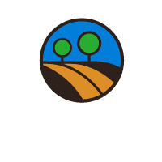
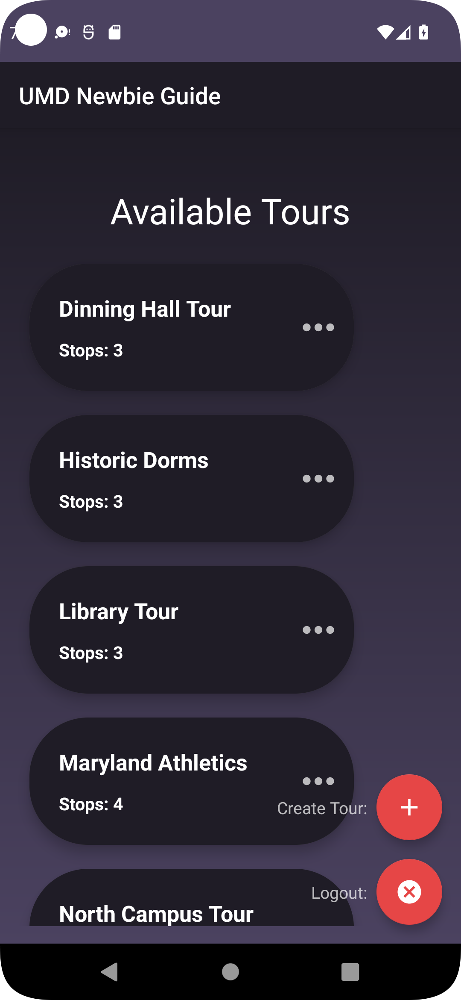
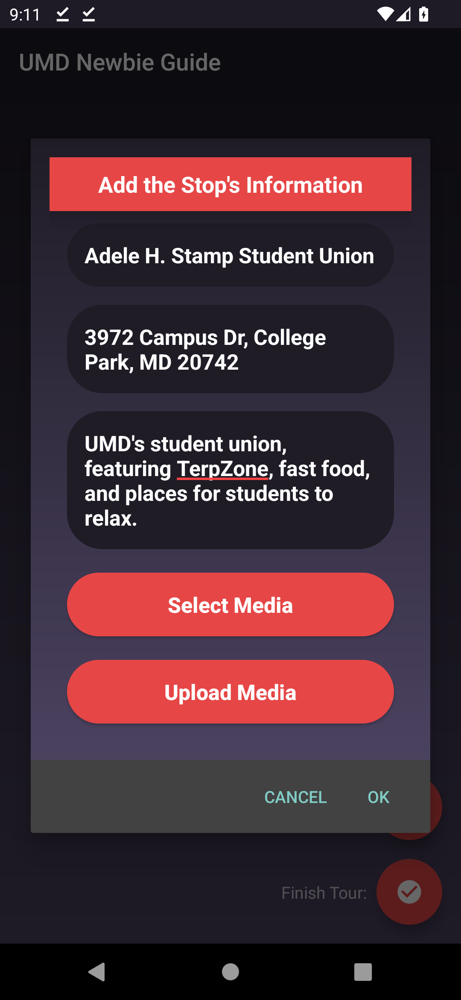

|  | UMD Newbie Guide |
| Link to .apk | |
| External link to source zip | |
| App Description: UMD Newbie Guide app is a platform for creating, accessing, and taking user-made tours of the University of Maryland campus. Users create a tour by naming it and adding stops. Users create stops by giving them a name, a short description, specifying its address, and attaching media. Users can view and access other users' tours through the homepage. Within the program, users may create and log into user accounts that are password-protected. The Google Firebase platform is used to manage authentication and the actual tour data. |
|
|  |  |
| External link to Youtube video | |
| List of external libraries and code used in this project: |
|